5.1 CNN Architecture Landscape
AlexNet, VGGNet, GoogLeNet, ResNet, DenseNet, SENet, NASNet and the evolution of deep image classifiers
1. ImageNet and the Deep Learning Revolution
The ImageNet Large Scale Visual Recognition Challenge (ILSVRC) began in 2010 and served as the primary benchmark driving the modern deep learning era. It features 1000 object categories, 1.2 million training images, 50K validation images, and 150K test images. Performance is measured by Top-1 and Top-5 error rates.
Top-5 error: The ground truth label must appear among the model's 5 highest-probability predictions.
Historical Top-5 Error Progression
| Year | Model | Top-5 Error (%) | Notes |
|---|---|---|---|
| 2010 | NEC America | 28.2 | Shallow ensemble |
| 2011 | Xerox | 25.8 | Shallow ensemble |
| 2012 | AlexNet | 15.3 (ens.) | First deep learning winner |
| 2013 | ZFNet | 14.7 | Visualization-guided design |
| 2014 | VGGNet | 6.8 (ens.) | Deeper, uniform 3×3 kernels |
| 2014 | GoogLeNet | 6.67 | Inception modules |
| 2015 | ResNet | 3.57 (ens.) | Surpassed estimated human level |
| — | Human (Karpathy) | 5.1 | Estimated human-level |
| 2017 | SENet | 3.79 | Channel attention |
| 2017 | NASNet | 3.8 | Neural architecture search |
| 2018 | AmoebaNet | 3.7 | Evolutionary search |
| 2018 | AutoAugment | 3.52 | Learned augmentation |
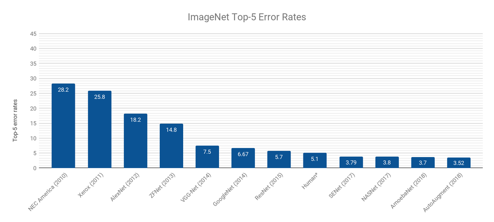
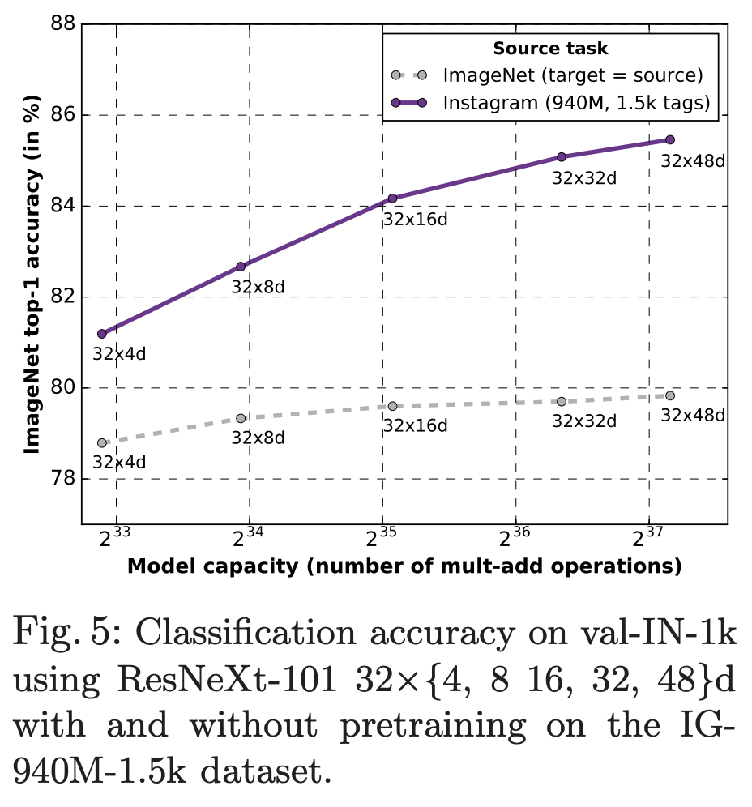
2. AlexNet (2012)
AlexNet (Krizhevsky, Sutskever, Hinton) was the breakthrough architecture that launched the deep learning revolution in computer vision, winning ILSVRC 2012 with a margin of nearly 11 percentage points over the runner-up.
Architecture
Five convolutional layers followed by three fully connected layers:
- Conv1: 96 filters, 11×11, stride 4 → ReLU → LRN → MaxPool
- Conv2: 256 filters, 5×5 → ReLU → LRN → MaxPool
- Conv3–4: 384 filters, 3×3 → ReLU
- Conv5: 256 filters, 3×3 → ReLU → MaxPool
- FC6–7: 4096 units → ReLU → Dropout
- FC8: 1000 units → Softmax
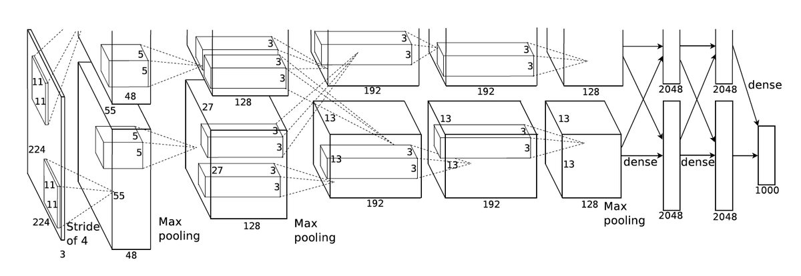
Key Innovations
| Innovation | Details |
|---|---|
| ReLU activations | Applied after every conv and FC layer; trains ~6x faster than tanh |
| Data augmentation | Random 224×224 crops from 256×256, horizontal flips, PCA color jitter |
| Dropout | Applied in FC layers with rate 0.5 to reduce overfitting |
| GPU training | Trained on two GPUs with grouped convolutions |
| Local Response Normalization | Before MaxPool in layers 1 and 2; rarely used today |
3. ZFNet (2013)
ZFNet (Zeiler and Fergus, "Visualizing and Understanding Convolutional Networks") improved AlexNet by using deconvolution-based visualization to understand what each layer learns, guiding architectural changes.
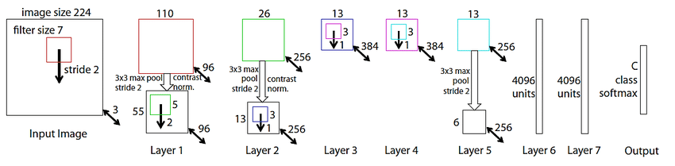
| Property | AlexNet | ZFNet | Reason |
|---|---|---|---|
| Conv1 kernel | 11×11 | 7×7 | Captures mid-range frequencies missed by 11×11 |
| Conv1 stride | 4 | 2 | Eliminates aliasing in feature maps |
The visualization methodology was ZFNet's primary contribution, providing the field with interpretability tools that guided subsequent architecture design. Top-5 error: 14.7%.
4. VGGNet (2014)
VGGNet (Simonyan and Zisserman) demonstrated that depth with small uniform kernels was the key to better performance. It uses only 3×3 convolutions throughout the entire network.
Receptive Field Equivalence
The central insight: stacking small kernels achieves the same receptive field as a single large kernel but with fewer parameters and more non-linearities.
| Stacked 3×3 layers | Equivalent single kernel | Parameters (per channel) | Non-linearities |
|---|---|---|---|
| 2 | 5×5 | $2 \times 9 = 18$ vs. $25$ | 2 vs. 1 |
| 3 | 7×7 | $3 \times 9 = 27$ vs. $49$ | 3 vs. 1 |
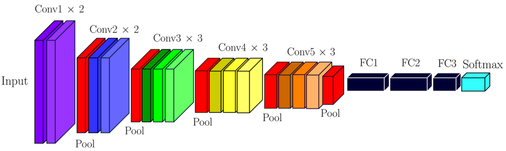
VGG16 / VGG19 Structure
VGG16 (16 weight layers): 2×Conv-64 → Pool, 2×Conv-128 → Pool, 3×Conv-256 → Pool, 3×Conv-512 → Pool, 3×Conv-512 → Pool, FC-4096, FC-4096, FC-1000 → Softmax.
| Strengths | Weaknesses |
|---|---|
| Simple, uniform architecture | ~138 million parameters (VGG16) |
| Demonstrated depth matters | Slow to train; high memory usage |
| Excellent transfer learning backbone | Most parameters wastefully in FC layers |
Top-5 error: 7.5% (single model), 6.8% (ensemble).
5. GoogLeNet / Inception v1 (2014)
GoogLeNet (Szegedy et al., "Going Deeper with Convolutions") introduced the Inception module: instead of choosing a single kernel size, apply multiple kernel sizes in parallel and concatenate the results. 22 layers deep with only ~5 million parameters.
Inception Module
The naive inception module applies 1×1, 3×3, 5×5 convolutions and 3×3 max-pooling in parallel, then concatenates. The problem: concatenating all outputs explodes the number of feature maps and hence parameters/computation.
The solution: add 1×1 bottleneck convolutions before the expensive 3×3 and 5×5 operations to first reduce the channel dimension.
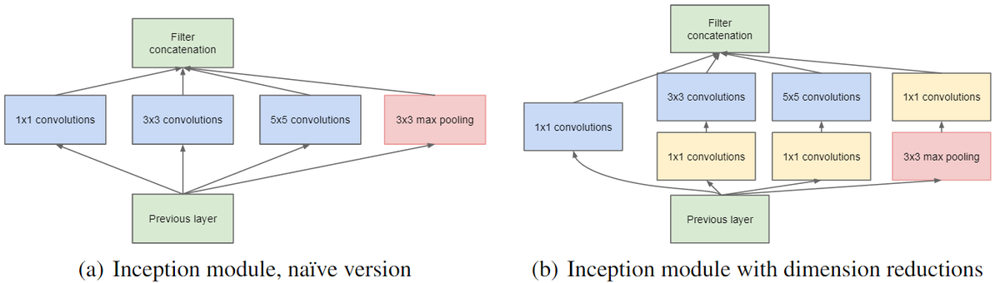
Full Architecture
- 22 layers deep (weight layers only).
- Average pooling before the classifier instead of multiple FC layers — drastically reduces parameters.
- Dropout 0.7 after average pooling.
- Auxiliary classifiers at intermediate layers inject gradient signal into early layers during training (removed at inference).
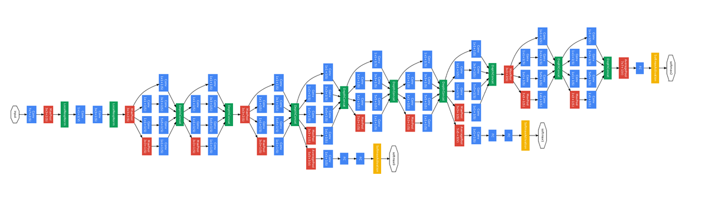
6. ResNet (2015)
ResNet (He et al., "Deep Residual Learning for Image Recognition") solved the degradation problem that had prevented very deep networks from training effectively.
The Degradation Problem
In very deep plain networks, adding more layers causes accuracy to saturate and then decrease — even the training error increases. This is not overfitting and not underfitting in the conventional sense. A 56-layer plain network has higher training error than a 20-layer network.
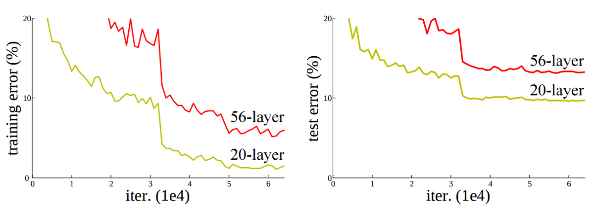
Residual Learning
Instead of learning the desired mapping $H(\mathbf{x})$ directly, learn the residual $F(\mathbf{x}) = H(\mathbf{x}) - \mathbf{x}$:
Why it works:
- Easy identity mapping: If a layer is not needed, the network sets $F(\mathbf{x}) \approx 0$, making the block an identity function. This is easy to learn.
- Gradient highway: The identity shortcut provides a direct path for gradients to flow back through the network, alleviating vanishing gradients.
- Ensemble interpretation: ResNets can be viewed as an ensemble of many shorter networks.
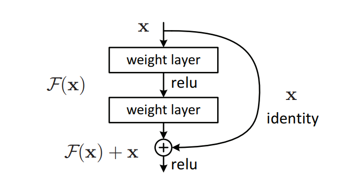
Residual Block Variants
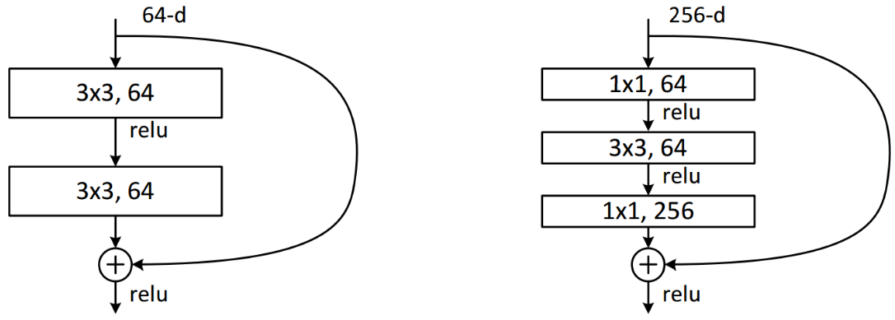
| Variant | Layers | Parameters | Block type |
|---|---|---|---|
| ResNet-18 | 18 | ~11.7M | Basic (3×3, 3×3) |
| ResNet-34 | 34 | ~21.8M | Basic |
| ResNet-50 | 50 | ~25.6M | Bottleneck (1×1, 3×3, 1×1) |
| ResNet-101 | 101 | ~44.5M | Bottleneck |
| ResNet-152 | 152 | ~60.2M | Bottleneck |
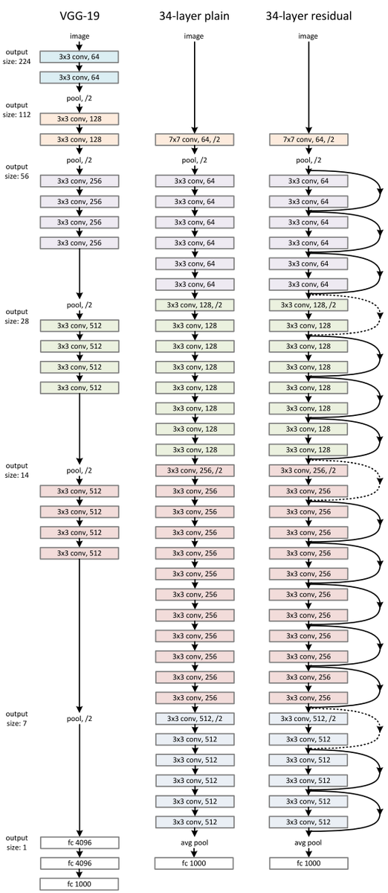
Top-5 error: 4.49% (single ResNet-152), 3.57% (ensemble) — the first architecture to surpass estimated human-level performance (5.1%).
7. ResNet Variants and Inception Extensions
7.1 ResNet Pre-activation (2016)
He et al. proposed moving BN and ReLU before the convolution (pre-activation) rather than after:
- Original: Conv → BN → ReLU → Conv → BN → (+x) → ReLU
- Pre-activation: BN → ReLU → Conv → BN → ReLU → Conv → (+x)
The identity shortcut becomes a truly clean path (no BN or ReLU), enabling unimpeded gradient flow. ResNet-1001 with pre-activation: test error 4.92% vs. 7.61% original on CIFAR-10.
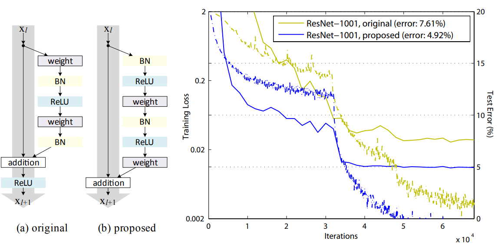
7.2 Wide ResNet (2016)
Instead of going deeper, make the network wider (more feature maps per layer). Notation: WRN-$d$-$k$ has depth $d$ and width multiplier $k$.
- Increasing width consistently improves performance.
- Wider networks need dropout within residual blocks for regularization.
- WRN-28-10: CIFAR-10 error 4.0%, comparable to ResNet-1001 but with far fewer layers.
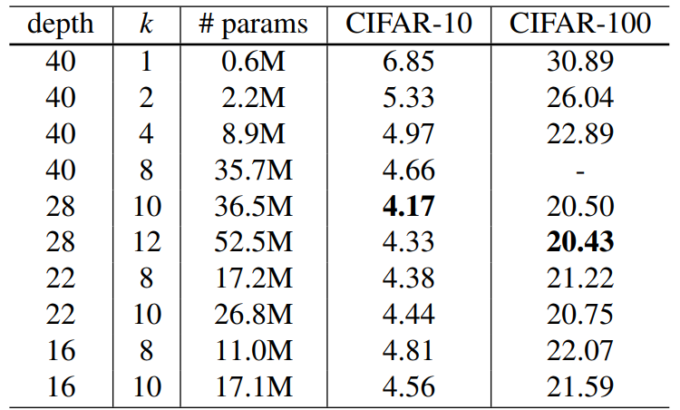
7.3 Inception v2 and v3
Szegedy et al. ("Rethinking the Inception Architecture") proposed two factorizations:
Two stacked 3×3 convolutions have the same receptive field as one 5×5 but use fewer parameters ($2 \times 9 = 18$ vs. 25 per channel pair) and add an extra non-linearity.
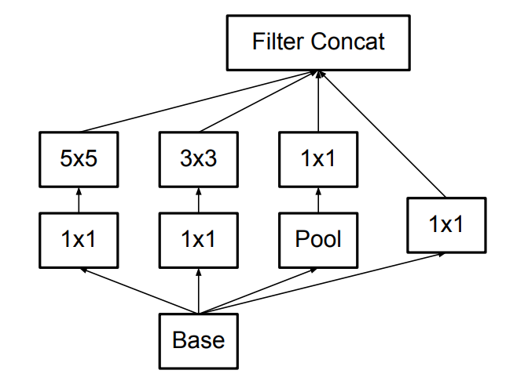
A 3×3 convolution can be factorized into a 1×3 followed by a 3×1 convolution, reducing computation by ~33%.
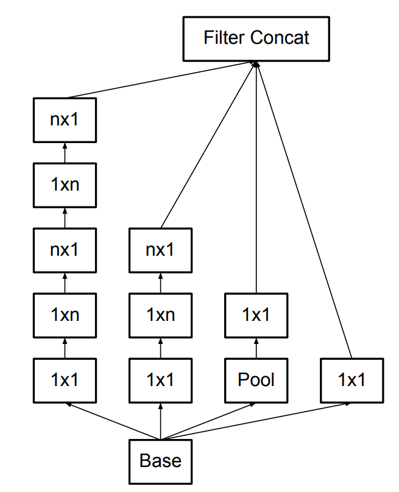
Inception v3 = Inception v2 + RMSprop optimizer + label smoothing regularization + factorized 7×7 in the stem + batch-normalized FC before auxiliary classifier.
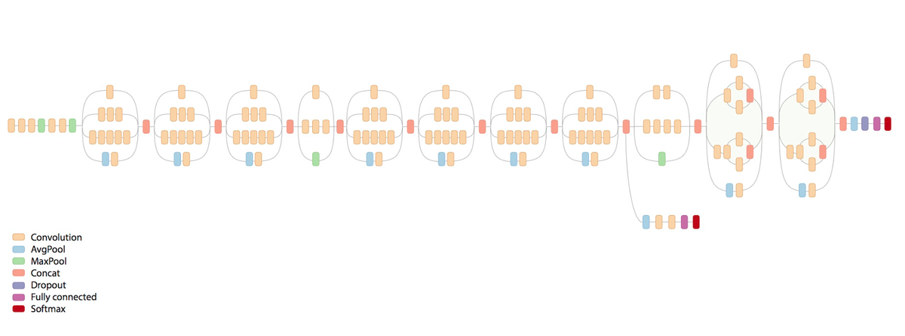
7.4 Inception v4 and Inception-ResNet (2016)
Inception v4 introduced a cleaner, more uniform inception architecture. Inception-ResNet v1/v2 adds residual connections on top of inception blocks, enabling faster convergence.
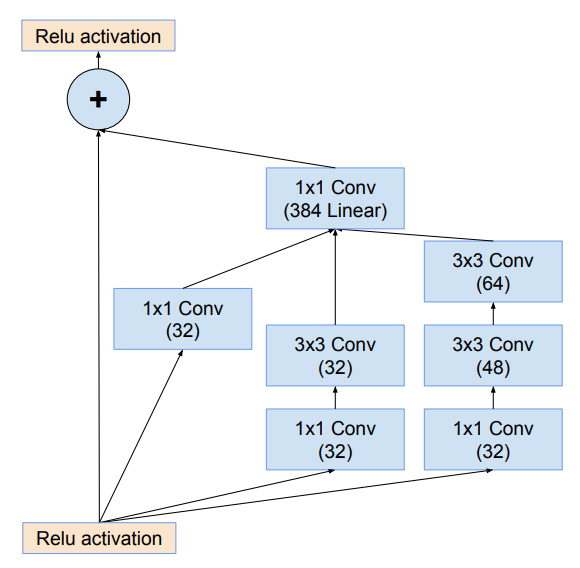
7.5 ResNeXt (2016)
ResNeXt (Xie et al.) introduces a new dimension: cardinality (the number of parallel transformation paths). The block follows a split-transform-aggregate pattern.
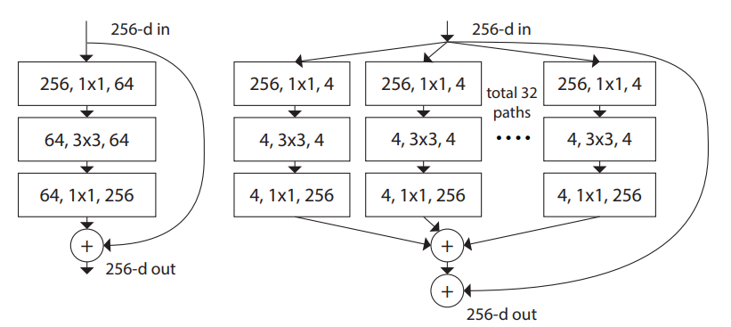
| Setting | Top-1 Error (%) |
|---|---|
| ResNet-50 (1×64d) | 23.9 |
| ResNeXt-50 (32×4d) | 22.2 |
| ResNet-101 (1×64d) | 22.0 |
| ResNeXt-101 (32×4d) | 21.2 |
Increasing cardinality is more effective than increasing depth or width for improving accuracy at the same computational budget.
7.6 Squeeze-and-Excitation Networks (SENet, 2017)
SENet (Hu et al.) introduces a lightweight channel attention mechanism that re-weights feature map channels based on their global importance. It can be inserted into any existing architecture.
Excitation: $\mathbf{s} = \sigma(\mathbf{W}_2 \cdot \delta(\mathbf{W}_1 \cdot \mathbf{z}))$ (two FC layers, reduction ratio $r=16$).
Scale: $\tilde{\mathbf{x}}_c = s_c \cdot u_c$ — channel-wise multiplication.
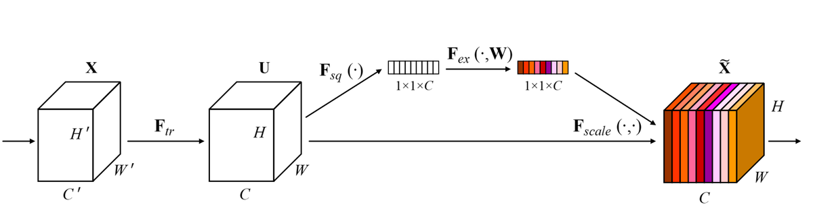
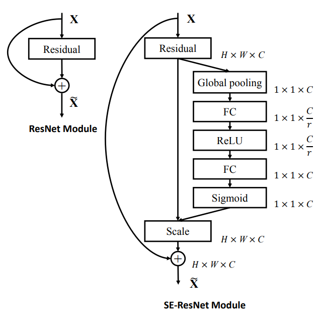
| Architecture | Original Top-5 (%) | SE Version Top-5 (%) |
|---|---|---|
| ResNet-50 | 7.8 | 6.62 |
| ResNet-101 | 7.1 | 6.19 |
| ResNet-152 | 6.7 | 5.73 |
| ResNeXt-50 | 6.0 | 5.49 |
| VGG-16 | 9.3 | 7.58 |
SENet won ILSVRC 2017 with Top-5 error 3.79%.
8. DenseNet (2016)
DenseNet (Huang et al., "Densely Connected Convolutional Networks") extends ResNet's skip connections to the extreme: every layer receives feature maps from all preceding layers via concatenation.
For a network with $L$ layers there are $\frac{L(L+1)}{2}$ direct connections (vs. $L$ in a plain network).
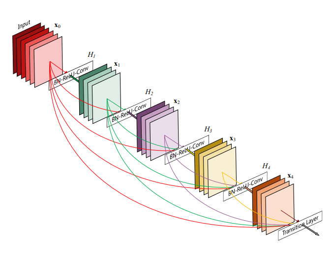
Architecture Details
- Growth rate $k$: Number of new feature maps produced per layer. Typical values: $k = 12, 24, 32$. Layer $l$ receives $k_0 + k(l-1)$ input channels.
- Dense blocks contain multiple layers with dense connectivity.
- Transition layers between blocks: BN → 1×1 Conv (channel compression) → 2×2 Average Pooling.
- DenseNet-BC: Adds a 1×1 bottleneck before each 3×3 conv (B) and compresses channels at transitions by factor $\theta = 0.5$ (C).
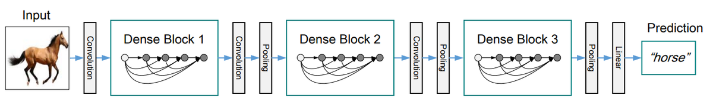
DenseNet vs. ResNet
| Property | ResNet | DenseNet |
|---|---|---|
| Connection type | Addition (residual) | Concatenation (dense) |
| Feature reuse | Implicit | Explicit — all previous features available |
| Parameters | Higher | Lower |
| FLOPs | Higher | Lower |
| Memory | Lower | Higher (must store all feature maps) |
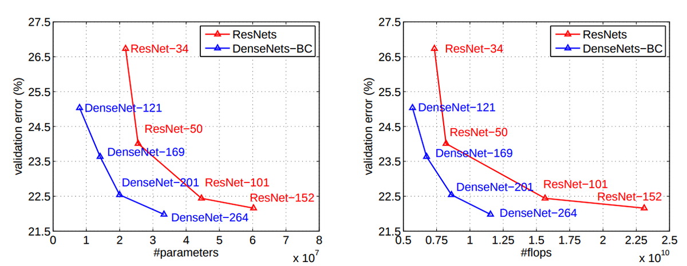
9. NASNet (2017)
NASNet (Zoph et al., "Learning Transferable Architectures for Scalable Image Recognition") uses machine learning to search for optimal architectures, replacing hand-crafted design with reinforcement learning.
Search Process
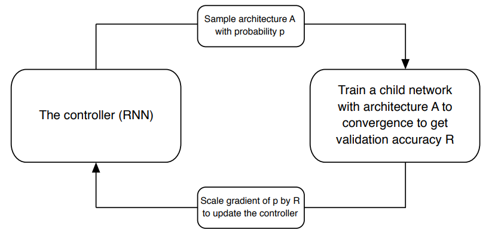
- A controller RNN samples an architecture from the search space with probability $p$.
- The proposed child network is trained to obtain validation accuracy $R$.
- The gradient of $p$ is scaled by $R$ to update the controller (REINFORCE algorithm).
- Repeat: the controller gradually learns to propose better architectures.
Cell-Based Search
Rather than searching for the full architecture, NASNet searches for two types of cells:
- Normal Cell: Retains spatial dimensions (same H×W).
- Reduction Cell: Downsamples spatial dimensions by factor of 2.
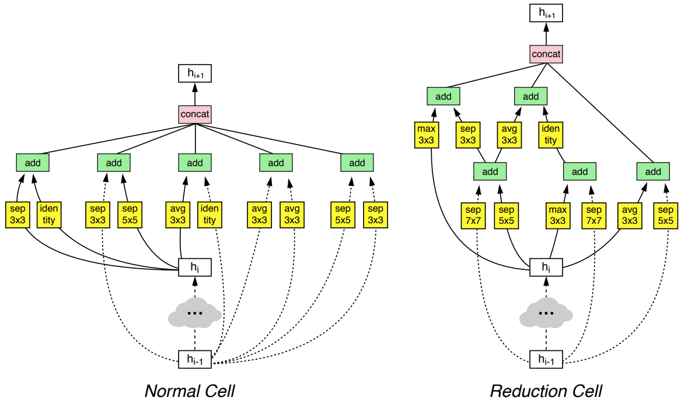
Performance
- NASNet outperforms all hand-crafted networks on ImageNet at the same accuracy level.
- Lower FLOPs compared to state-of-the-art human-designed architectures.
- Top-5 error: 3.8% on ImageNet.
- Training cost: 500 GPUs for 4 days (search phase).
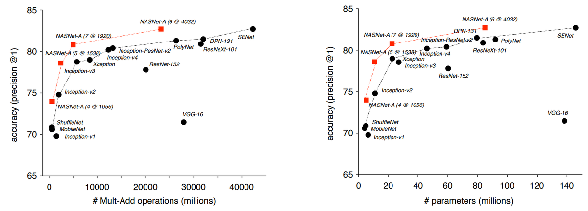
10. Other Notable Architectures
SqueezeNet uses fire modules (squeeze 1×1 conv + expand mix of 1×1 and 3×3 convs) with bypass connections. AlexNet-level accuracy with ~50x fewer parameters, making it suitable for mobile/edge deployment.
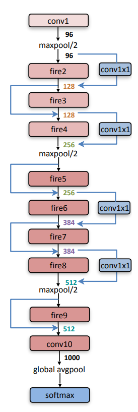
Xception replaces all inception modules with depthwise separable convolutions: a depthwise conv (one filter per input channel) followed by a pointwise 1×1 conv to combine channels. Dramatically more parameter-efficient than standard convolutions.
Hand-crafted architectures optimized for mobile devices using depthwise separable convolutions. MobileNet v2 introduces inverted residuals (expand channels, apply depthwise conv, compress back) and linear bottlenecks (no ReLU at the narrow end to preserve information).
Proposed by Hinton et al. Key differences from standard CNNs: (1) vector output (capsules) instead of scalar activation — magnitude represents probability of entity existence, orientation represents entity properties. (2) Routing by agreement instead of max-pooling, preserving spatial relationships between object parts. (3) Potentially requires less training data.
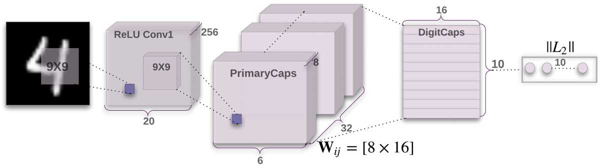
11. Chronological Summary and Design Paradigms
| Year | Architecture | Key Innovation | Top-5 Error (%) | Parameters |
|---|---|---|---|---|
| 2012 | AlexNet | ReLU, dropout, GPU training | 15.3 | ~60M |
| 2013 | ZFNet | Visualization-guided design, smaller first filters | 14.7 | ~60M |
| 2014 | VGGNet | Stacked 3×3 convolutions, uniform depth | 6.8 | ~138M |
| 2014 | GoogLeNet | Inception modules, 1×1 bottlenecks, avg pooling | 6.67 | ~5M |
| 2015 | ResNet | Residual connections, identity shortcuts | 3.57 | 25–60M |
| 2016 | Inception v2/v3 | Factorized convolutions, asymmetric kernels | — | — |
| 2016 | DenseNet | Dense connectivity via concatenation | — | Lower than ResNet |
| 2016 | Wide ResNet | Width multiplier — wider beats deeper | 5.79 (top-5) | Varies |
| 2016 | ResNeXt | Cardinality (grouped convolutions) | — | ~25M |
| 2017 | SENet | Channel attention (squeeze-and-excitation) | 3.79 | +10% |
| 2017 | NASNet | Neural architecture search with RL | 3.8 | Varies |
| 2018 | AmoebaNet | Evolutionary architecture search | 3.7 | Varies |
Design Paradigm Evolution
| Era | Approach | Examples |
|---|---|---|
| 2012–2014 | Make it deeper | AlexNet → ZFNet → VGG |
| 2014–2015 | Make it smarter (multi-scale, residual) | GoogLeNet, ResNet |
| 2015–2016 | Refine the building blocks | Inception v2/v3, DenseNet, Wide ResNet, ResNeXt, SE |
| 2017+ | Learn the architecture itself | NASNet, AmoebaNet, ENASNet |
Batch normalization is essential for stable training of deep networks.
Residual connections solve the degradation problem and enable training very deep networks.
Width vs. depth: Wider networks can match deeper ones with fewer layers (Wide ResNet).
Channel attention (SE blocks) provides a cheap accuracy boost for any architecture.